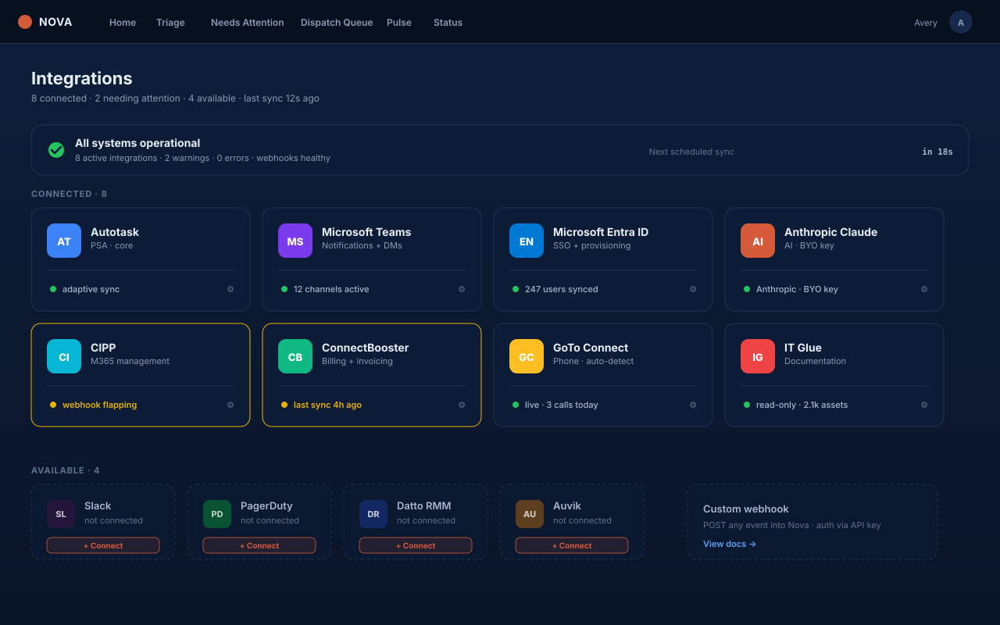

Nova lives on top of the systems your MSP already runs. We don't ship custom fields into your PSA, we don't replace your communication stack, and we don't ask you to switch identity providers. Click in, plug in, go.

The core integration. Nova polls Autotask continuously — fast during business hours, quieter overnight — for new and updated tickets, classifies them, and writes the dispatcher's accepted classification back to the ticket — priority, queue, category, sub-category, work type. No custom fields. No PSA add-ons.
All Pulse cards (briefings, P1 alerts, EOD reports) post to your dispatch channel. Per-tech status checks land as direct messages with one-click reply actions. Adaptive Cards, not bots.
Single sign-on for Nova staff and the client portal. Role mappings honor your Entra groups — service desk, dispatch, owner, billing. Add a user to a group in Entra, they get the right Nova access on next login.
Anthropic powers Nova's classification, briefings, and end-of-day reports out of the box. You bring your own API key, billed directly by Anthropic. Their enterprise terms include zero retention — your prompts aren't stored or used for training.
For MSPs with existing OpenAI relationships or compliance constraints. Any AI process (triage, briefings, summaries) can run on OpenAI instead of Anthropic. Same prompt library, same outputs.
Pull license assignments, MFA status, and tenant health into Nova. Drives the asset register in client portal and informs triage (e.g., "user has E5 license — full troubleshoot path available").
Surface invoice + payment status inside the client portal. Clients see their billing history, current balance, and pay invoices — without leaving Nova-branded UX.
Pull documentation directly into the AI's classification context for faster, smarter triage.
For MSPs running on Slack instead of Teams. Same Adaptive Cards, mapped to Slack Block Kit.
For RMM context (alerts, device health) feeding triage. Conversations underway.
Real-time event push instead of polling. Cuts triage latency from 30s to ~3s.
Need an integration that's not on this list? Tell us. Customer asks shape the roadmap.
Tell us your stack — we'll tell you exactly what plugs in on day one and what's two weeks out.